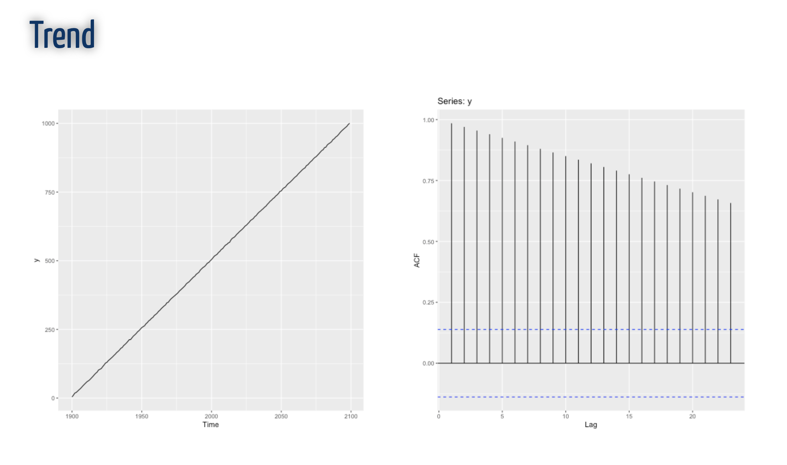

| ID | calories | |
|---|---|---|
| 0 | 1 | 420 |
| 1 | 2 | 380 |
| 2 | 3 | 390 |
Week 1B: Time Series: Objects in Python and Visualization
Time Series
A time series is a sequence of observations taken sequentially in time.
Cross-sectional data
Observations that come from different individuals or groups at a single point in time.
Time series data
| Year | Sales | |
|---|---|---|
| 0 | 2019 | 490 |
| 1 | 2020 | 980 |
| 2 | 2021 | 260 |
A set of observations, along with some information about what times those observations were recorded.
DateTime
Cross-sectional data
DateTime
Cross-sectional data
Necessary packages
Read AirPassenger
AirPassenger dataset
Data Visualization
Convert to Date and Time
from datetime import datetime
airpassenger['Month']= pd.to_datetime(airpassenger['Month'])
airpassenger.info()<class 'pandas.core.frame.DataFrame'>
RangeIndex: 144 entries, 0 to 143
Data columns (total 2 columns):
# Column Non-Null Count Dtype
--- ------ -------------- -----
0 Month 144 non-null datetime64[ns]
1 #Passengers 144 non-null int64
dtypes: datetime64[ns](1), int64(1)
memory usage: 2.4 KBData Visualization
Data Visualization
Split date into month and year
Split date into month and year (cont.)
| Month | #Passengers | year | month | |
|---|---|---|---|---|
| 0 | 1949-01-01 | 112 | 1949 | 1 |
| 1 | 1949-02-01 | 118 | 1949 | 2 |
| 2 | 1949-03-01 | 132 | 1949 | 3 |
| 3 | 1949-04-01 | 129 | 1949 | 4 |
| 4 | 1949-05-01 | 121 | 1949 | 5 |
| ... | ... | ... | ... | ... |
| 139 | 1960-08-01 | 606 | 1960 | 8 |
| 140 | 1960-09-01 | 508 | 1960 | 9 |
| 141 | 1960-10-01 | 461 | 1960 | 10 |
| 142 | 1960-11-01 | 390 | 1960 | 11 |
| 143 | 1960-12-01 | 432 | 1960 | 12 |
144 rows × 4 columns
Time Series Patterns
Trend
Long-term increase or decrease in the data.
Seasonal
A seasonal pattern exists when a series is influenced by seasonal factors (e.g., the quarter of the year, the month, or day of the week). Seasonality is always of a fixed and known period. Hence, seasonal time series are sometimes called periodic time series.
Period is unchanging and associated with some aspect of the calendar.
Time Series Patterns (cont)
Cyclic
A cyclic pattern exists when data exhibit rises and falls that are not of fixed period. The duration of these fluctuations is usually of at least 2 years. In general,
the average length of cycles is longer than the length of a seasonal pattern.
the magnitude of cycles tends to be more variable than the magnitude of seasonal patterns
Example: trend
Example: seasonal
Example: multiple seasonality
Example: Trend + Seasonal
Cyclic
Cyclic + Seasonal
Frequency of a time series: Seasonal periods
Seasonal plots
Seasonal plots
Seasonal plots
Seasonal plots
Seasonal plots
Seasonal plots
Seasonal plots
Yearly variation
pandas Time Series: index by time
Index - Yearly
Method 1
Index - Yearly (cont.)
Method 2
freq='AS' for start of year
DatetimeIndex(['2012-01-01', '2013-01-01', '2014-01-01', '2015-01-01',
'2016-01-01'],
dtype='datetime64[ns]', freq='AS-JAN')Index - Yearly (cont.)
Method 3
freq='A' end of year frequency
DatetimeIndex(['2012-12-31', '2013-12-31', '2014-12-31', '2015-12-31',
'2016-12-31'],
dtype='datetime64[ns]', freq='A-DEC')Index - Yearly (cont.)
Method 4
Annual indexing with arbitrary month
DatetimeIndex(['2012-11-01', '2013-11-01', '2014-11-01', '2015-11-01',
'2016-11-01'],
dtype='datetime64[ns]', freq='AS-NOV')Index - Yearly (cont.)
Index - Monthly
Method 1
PeriodIndex(['2022-01', '2022-02', '2022-03', '2022-04', '2022-05', '2022-06',
'2022-07', '2022-08'],
dtype='period[M]', freq='M')Method 2
Index - Quarterly
Index - Daily
Index - Hourly
Range of hourly timestamps
PeriodIndex(['2022-01-01 00:00', '2022-01-01 01:00', '2022-01-01 02:00',
'2022-01-01 03:00', '2022-01-01 04:00', '2022-01-01 05:00',
'2022-01-01 06:00', '2022-01-01 07:00'],
dtype='period[H]', freq='H')DatetimeIndex(['2022-01-01 00:00:00', '2022-01-01 01:00:00',
'2022-01-01 02:00:00', '2022-01-01 03:00:00',
'2022-01-01 04:00:00', '2022-01-01 05:00:00',
'2022-01-01 06:00:00', '2022-01-01 07:00:00'],
dtype='datetime64[ns]', freq='H')Sequence of durations increasing by an hour
Define multiple frequencies
Next lesson
Correlation
Autocorrelation

ACF plot
import pandas as pd
from matplotlib import pyplot as plt
from statsmodels.graphics.tsaplots import plot_acf
# Select relevant data, index by Date
data = airpassenger[['Month', '#Passengers']].set_index(['Month'])
# Calculate the ACF (via statsmodel)
data| #Passengers | |
|---|---|
| Month | |
| 1949-01-01 | 112 |
| 1949-02-01 | 118 |
| 1949-03-01 | 132 |
| 1949-04-01 | 129 |
| 1949-05-01 | 121 |
| ... | ... |
| 1960-08-01 | 606 |
| 1960-09-01 | 508 |
| 1960-10-01 | 461 |
| 1960-11-01 | 390 |
| 1960-12-01 | 432 |
144 rows × 1 columns
ACF plot

ACF
ACF
ACF
ACF
ACF
## Time series forecasting
Training and Test Set
Simple time series forecasting technique
Simple time series forecasting technique
Simple time series forecasting technique
Simple time series forecasting technique
Simple time series forecasting technique
References
https://jakevdp.github.io/PythonDataScienceHandbook/03.11-working-with-time-series.html